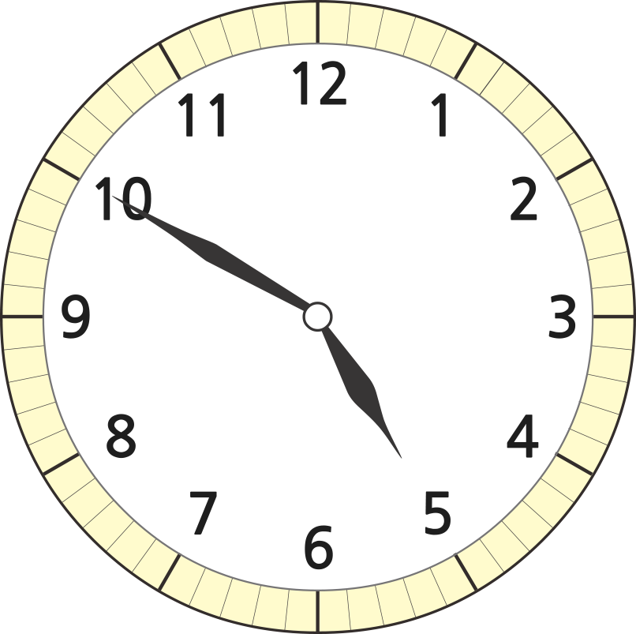

- 1
- 2
- 3
- 4
-
1 자를 이용하여 길이를 재어 보세요.
꾸러미 1 -
2 안에 알맞은 수를 써넣으세요.
-
4 m 3 cm ＝
cm403
-
325 cm ＝
m3cm25
-
4 m 3 cm ＝
-
3 시각을 읽어 보세요.
시4분50시5분 전10 -
4 은수는 오전 10시부터 오후 1시까지 책을 읽었습니다. 은수가 책을 읽은 시간은 몇 시간일까요?
시간3